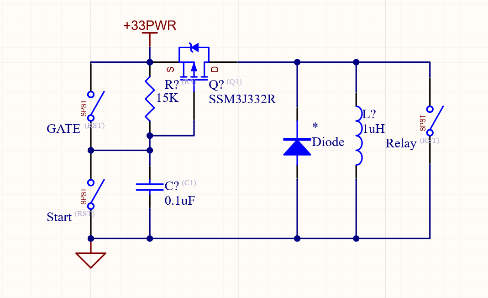
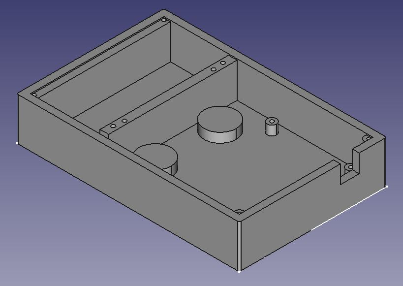

After working on a farm for 2 years I noticed some areas for improvement. There is an electric gate run by 2 buttons, one to run the gate forward down a ~150ft hallway and one to run the gate back the opposite way. After watching the farmers jam a metal rod into the button to make the gate run for 3-4 minutes, forget about it, and burn out the $600 motor 3 times in two months, I took it onto myself to find a solution. This is that solution.
This circuit was designed around a mechanical relay that could drive the gate's 110 volt AC, 0.5 amperes controls. I used an RC discharge timer driving a mosfet to run the relay in the Gate Controller for simplicity over using a programmable circuit. This was designed to be used with Lithium AA batteries so that it could be run in extreme temperatures with minimal voltage drop. Along with better stability in extreme weather, Lithium batteries also have a higher voltage compared to Alkalines and NiMH batteries. This circuit will not keep the gate turned on for long periods of time with lower voltage batteries which helps protect it from burning out the motor when the gate reaches the end of its rail.
The circuit has a button to start the Gate Controller timer and one to end it. For extra protection, the circuit also has an auxiliary plug for ending the timer in case the gate makes it to the end of the rail. The auxiliary plug is made to have a magnetic contact switch hooked into it which would stop the timer when the gate is in proximity to the end of the rail.
Circuit revision/redesign done by Roman Robles PE Electrical Engineer
Tested the circuit to make sure that the math of the relay would drive the gate the full length of the alley way and ensure that the RC Discharge Timer math was correct.
I designed and 3D printed a case that had screw holes and separate access to the batteries and circuit. This case is meant to protect both the user from the electronics as well as prevent mishandling and tampering of the electronics from both humans and cows that pass by.
Cad Design
3D Printing the box
Finished Box
Unfortunately I do not have any images of this installed and running. I will be sure to provide this ASAP.